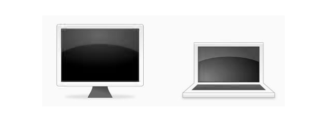
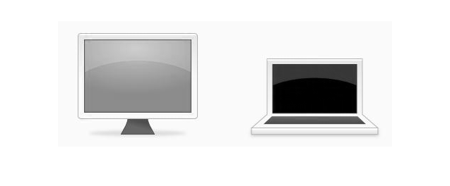
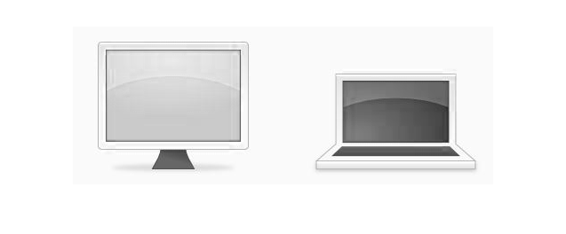

DSP TUTORIAL -- UNDERSTANDING IMAGE PROCESSING ON MATLAB
This tutorial gives a beginner level introduction to image processing using MATLAB® 2013.
Contents
- INTRODUCTION
- Reading and displaying the image
- Displaying individually the red, green and blue components.
- Converting an image to Gray Scale
- Using kernel matrices with images -- EDGE DETECTION
- Displaying the horizontal and vertical edges seperately
- Displaying the normalized vertical and horizontal edges combined
INTRODUCTION
Digital Image Processing refers to the manipulation of iamge data which is motivated by conversion between Spacial and Frequency domains.
A filter is a matrix, typically 3x3, 4x4, 5x5 which is applied to the input pixels one at a time, resulting in an output pixel in the filtererd image.
Reading and displaying the image
imread() and imshow() functions are used to load and display an image respectively.
image = imread('image.jpg');
imshow(image);
Displaying individually the red, green and blue components.
WE know that a digital jpeg image is comp;losed of red, blue and green components. The loaded image is 3 Dimensional matrix with dimensions mxnx3, where m and n are the length and width of the image.
% Displaying red-components figure(1) imshow(image(:,:,1)); % Displaying green-components figure(2) imshow(image(:,:,2)); % Displaying blue-components figure(3) imshow(image(:,:,3));  
Converting an image to Gray Scale
A colored image is converted into a grayscale image by simply calling the rgb2gray() function.
gray_image = rgb2gray(image); imshow(gray_image);
Using kernel matrices with images -- EDGE DETECTION
In image processing, many filter operations are applied to in image by performing a special operation called convolution with a matrix. this matrix is called a KERNEL. Kernels are typically 3x3 square matrices, although kernels of size 4x4, 5x5 are also used. The values stored in a kernel directly relates to the result after applying the filter, and filters are characterised solely by kernel matrix. For example, the following kernels are used for detecting the horizontal and vertical edges in an image.
% Define the Sobel kernels kernel_horizontal = [1 2 1;0 0 0;-1 -2 -1]; kernel_vertical = [1 0 -1;-2 0 2;-1 0 1]; % Convolve the gray image with Sobel Kernels M1 = conv2(double(gray_image), double(kernel_horizontal)); M2 = conv2(double(gray_image), double(kernel_vertical));
double is used because the loaded image was by defauls in Unit8 format, which needs to be converted in numbers before processing.
Displaying the horizontal and vertical edges seperately
Figure(4)
imshow(abs(M1),[]);
title('horizontal parts');
Figure(5)
imshow(abs(M2),[]);
title('vertical parts');
Undefined function 'Figure' for input arguments of type 'double'.
Error in image_kernel_conv_1 (line 67)
Figure(4)
Displaying the normalized vertical and horizontal edges combined
figure(2);
imshow((M1.^2+M2.^2).^0.5,[]);